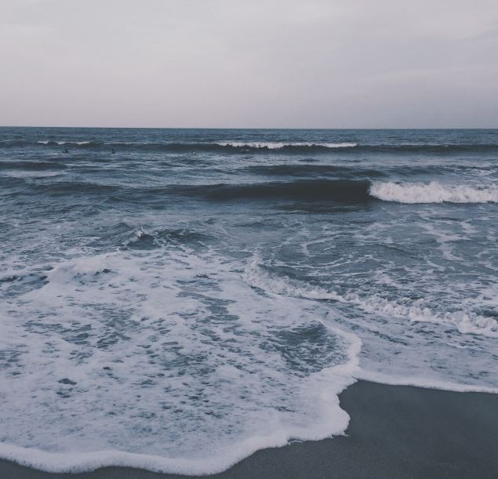

Tasik Kenyir, Terengganu (2020)
I went on a holiday with my big family. It was on a houseboat that running on water all day long. Before it starts moving, I took this picture. It looks aesthetic here. Definitely one of my favorite.
UiTM Caw. Pahang, Kampus Raub (2018)
 I was sight seeing from the 9th floor of my faculty building and I thought I would be a great view. Then I took out my phone and captured it. Turned out, I was right. It was a great view. I miss Raub's campus. It has so much hidden beauty. As example, this from this photo.
I was sight seeing from the 9th floor of my faculty building and I thought I would be a great view. Then I took out my phone and captured it. Turned out, I was right. It was a great view. I miss Raub's campus. It has so much hidden beauty. As example, this from this photo.
Tasik Kenyir, Terengganu (2020)
Have you ever heard the song "Mengintai Dari Tirai Kamar" by Exist? If I have to choose a song for this photo, I would definitely choose that song. That was my brother. I ask him to put his head out of the house boat window, then I took this shot. It was quite nice.
Teluk Chempedak, Kuantan (2020)
 I've always love the sea, I can sit for hours at the beach just to stare at the sea, admiring it. I love how waves come and go repeatedly without tired. This is from my favorite beach, Teluk Chempedak. I used to go there almost every week just to admire its beauty.
White Building, Kuantan
 This shot what from my room windows, I was day-dreaming while looking out to the windows and I thought "hey, this looks aesthetic". Then I took out my phone and captured this shot. It was aesthetic and I love it!
This shot what from my room windows, I was day-dreaming while looking out to the windows and I thought "hey, this looks aesthetic". Then I took out my phone and captured this shot. It was aesthetic and I love it!
Busy Road, Kuala Lumpur
 I was in Kuala Lumpur with my family. It was a busy day and the road pack with cars that stop while the traffic light is red. The day is gloomy. Randomly, I took out my phone and capture this view from the car windows. But hey, it turns out pretty decent.
I was in Kuala Lumpur with my family. It was a busy day and the road pack with cars that stop while the traffic light is red. The day is gloomy. Randomly, I took out my phone and capture this view from the car windows. But hey, it turns out pretty decent.
Rainy days, Kuantan
I still remember it was monsun season for here, I was bored for staying inside my house for long time. Then, I took my umbrella and went for a walk. I was thinking, "I can make pretty good shot here, using my umbrella". I put my umbrella on the road and took this photo. It is not that great but still good.
Back from work, Kuantan
 I was walking from my car to enter my house, then suddenly I saw this guy on a bike, assuming he was coming home from his work, I guess. Then I thought this would make a nice shot. Took my phone out and captured this photo. Smiling, because I was right. It was a nice shot.
I was walking from my car to enter my house, then suddenly I saw this guy on a bike, assuming he was coming home from his work, I guess. Then I thought this would make a nice shot. Took my phone out and captured this photo. Smiling, because I was right. It was a nice shot.
Taking a stroll along the beach, Kuantan
This is definitely one of my favorite shots. I was sitting while staring at the sea. Mesmerized by the view, suddenly this guy walk infront of me and I said to myself, "I will regret if I didnt capture this view". Took my phone out, and took this shot. I was satisfied with the result.
Lonely colourful path, Raub
This is also one of my favorite shot. I was walking with my friends. Randomly, I saw this old guy, walking really slowly and alone. I thought, life is a lonely road for sure. Then I took my phone and captured this shot, thinking "I have so much idea for this picture's caption"
Friendly clown, Bukit Tinggi, Pahang
Funny story is, I've always hated clowns. I couldnt even get close to them, I mean they are creepy. Right? But this one, he approched me so politely with his creepy makes up, but surprisingly, he didnt scared me. So I took a picture of him while he was making a "funny" face, that was what he said. This is the first clown have ever be my friend. Lol.